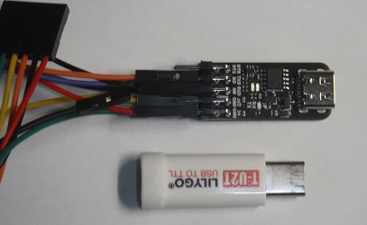
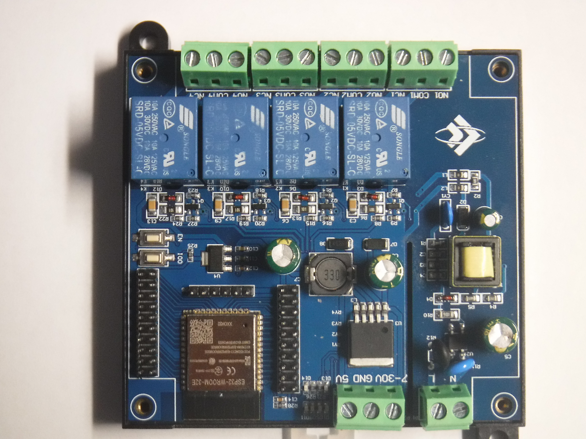

Basic theory of Ladder program
(1) FreePLC using ladder diagram programming, and the graphically intuitive program is easy to understand and follow.
(2) The vertical line on the right is a high-voltage line, shown in red. The vertical line on the left is low voltage, indicated in green.
(3) If the output ladder block is between the green and red lines, it is on.
(4) If the output ladder block between the lines is not a green or red line, it is off.
(5) If the rows of input ladder blocks are the same color as green or red, it means it is in conductive mode.
Hardware requirement
For program editing:
(1) PC can run browser
(2) USB-C to Uart cable link between PC and PLC. Auto enter Boot is recommended. LilyGo and WeAct provide these widgets as below image
(3) PLC mainboard.
(4) For development, it is recommended to use a PLC with input keys and output LEDs, using functions that can be simulated internally without connecting the hardware.
Software preparation
The following software required
(1) ESP32 Firmware downloader
(2) Any serial port monitor program, such as Arduino IDE, Putty etc.
(3) PLC firmware binary code
Begin PLC program editing
(1) Use pre installed program PLC connect to USB monitor program.
(2) In PLC mainboard, set setup switch to set position.
(3) In monitor, Input Wifi password and SSID
(4) Return setup switch to normal position. and press reset button in PLC mainboard
(5) Get PLC url on Uart monitor program, it should be "192.168.1.XXX"
(6) Use browser to open PLC edit page, use URL "192.168.1.XXX:8088/lan"
(7) Start edit program, by using Pick and place editing, when done, Press upload key to upload prgram to PLC mainboard
(8) The program will start running when the start LED turned on.
Online debug
The PLC program prvodes [PROBE] key for test the system status
When the [PROBE] key is pressed, the editing page will display the electrical status of the editing page. Green is low voltage, red is high voltage, and each ladder block will display its status, such as ON OFF, etc.